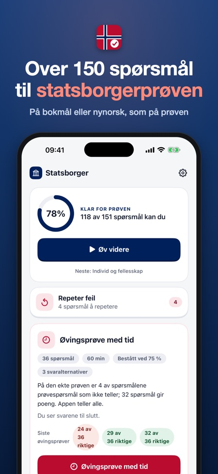
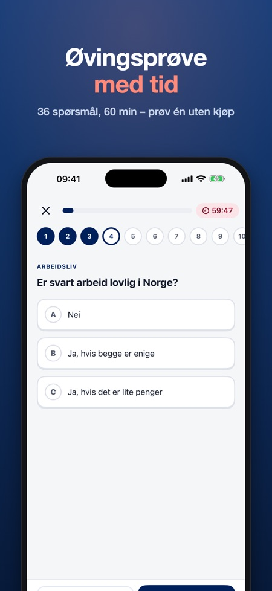
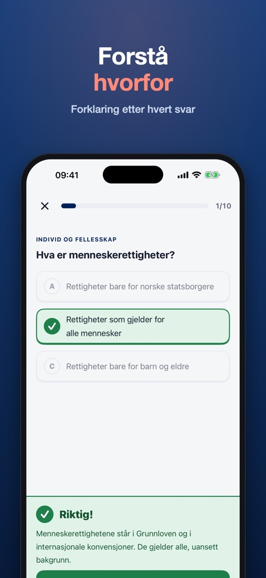

Forbered deg til statsborgerprøven med 150+ spørsmål om de 8 temaene i samfunnskunnskap. Etter hvert svar kan du lese forklaringen på norsk, engelsk, tysk, polsk eller arabisk.



Statsborgerprøven 2026/2027 er en uavhengig iPhone- og iPad-app fra Baytech BV for å øve til statsborgerprøven og samfunnskunnskapsprøven. Den har 150+ spørsmål om de 8 temaene i samfunnskunnskap, en øvingsprøve med tid i samme format som prøven (36 spørsmål på 60 minutter) og forklaringer på norsk, engelsk, tysk, polsk og arabisk. Den virker uten internett, og alt låses opp med ett kjøp på 129 kr uten abonnement.
| Spørsmål | Språk | Uten internett | Pris | |
|---|---|---|---|---|
| Denne appen | 150+ | Norsk; forklaring på 5 språk | Ja | 129 kr, ett kjøp |
| samfunnskunnskap.no (HK-dir, fagstoff til læreplanen) | Fagstoff og oppgaver | Norsk | Nei, nettside | 0 kr |
| Samfunn & Statsborgerprøven | 453 (127 uten kjøp) | Norsk og engelsk | Ikke oppgitt | 99 kr, ett kjøp |
| Bli Statsborger | Ikke oppgitt | Flere språk | Ikke oppgitt | Abonnement fra 135 kr/uke, 260 kr/md. |
| Norway Citizenship Test | 200+ | Grensesnitt på 14 språk | Ja | Ikke oppgitt |
Kilde: appbeskrivelser og priser i norsk App Store, sjekket 2. november 2026. Bruk også det offisielle fagstoffet på samfunnskunnskap.no; ingen app er offisiell.
De 8 temaene i samfunnskunnskap: historie og geografi, demokrati og velferd, individ og fellesskap, å komme til Norge, arbeidsliv, utdanning, familie og oppvekst, og helse.
Den har samme format som prøven: 36 spørsmål på 60 minutter, bestått ved 75 %. Øvingsprøven er trening, og den ekte prøven kan være annerledes.
Ja. Spørsmålene er på norsk, bokmål eller nynorsk, men forklaringen kan leses på norsk, engelsk, tysk, polsk eller arabisk.
Temaet historie og geografi og én hel øvingsprøve. Alt låses opp med ett kjøp.
Nei, du betaler én gang. Med Familiedeling gjelder kjøpet hele familien.
Ja, appen virker uten internett.
Nei. Appen er uavhengig og ikke tilknyttet HK-dir, UDI eller staten. Spørsmålene er skrevet av oss ut fra de offentlige temaene i læreplanen.
Betal én gang – ingen abonnement. Forbered deg til statsborgerprøven med 150+ spørsmål og forklaringer.
DETTE FÅR DU
• 150+ spørsmål på enkelt norsk om de 8 temaene i samfunnskunnskap: historie og geografi, demokrati og velferd, individ og fellesskap, å komme til Norge, arbeidsliv, utdanning, familie og oppvekst, og helse
• Øvingsprøve med tid i samme format som prøven: 36 spørsmål på 60 minutter, bestått ved 75 %
• Feil kommer tilbake til du har svart riktig 2 ganger på rad
• Du ser hvor langt du har kommet i hvert tema
FORKLARING PÅ DITT SPRÅK
Spørsmålene er på norsk, som på prøven: bokmål eller nynorsk. Etter hvert svar kan du lese forklaringen på norsk, engelsk, tysk, polsk eller arabisk.
RETTFERDIG PRIS
Prøv temaet historie og geografi og én hel øvingsprøve uten kjøp. Lås opp alt med ett kjøp. Ingen abonnement, ingen reklame, ingen konto. Med Familiedeling gjelder kjøpet hele familien. Appen virker uten internett.
Appen er uavhengig og ikke tilknyttet HK-dir, UDI eller staten. Alle spørsmål er skrevet av oss ut fra de offentlige temaene i læreplanen. Øvingsprøven er trening; den ekte prøven kan være annerledes.